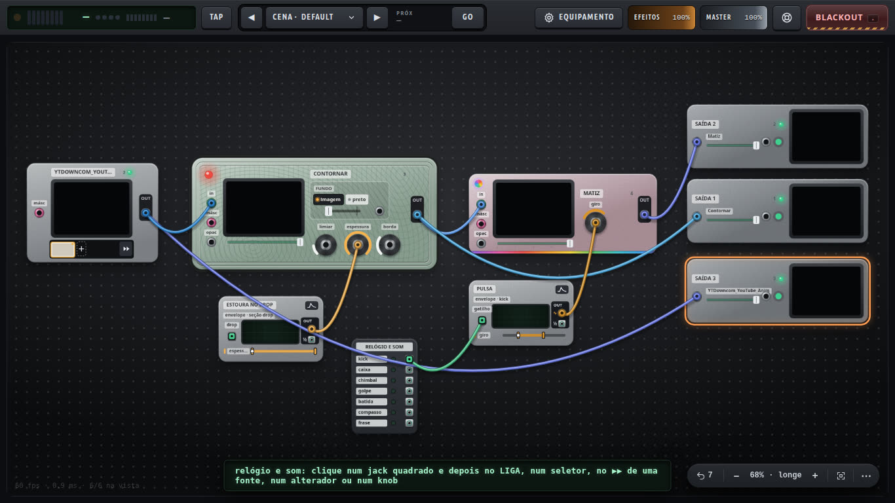
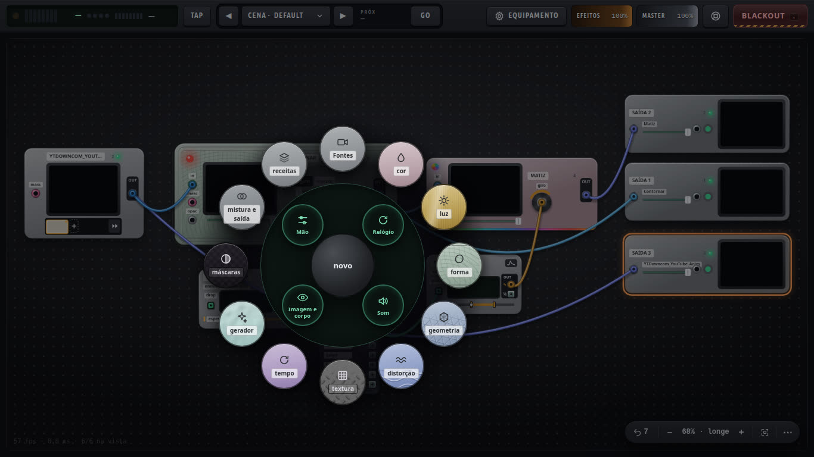
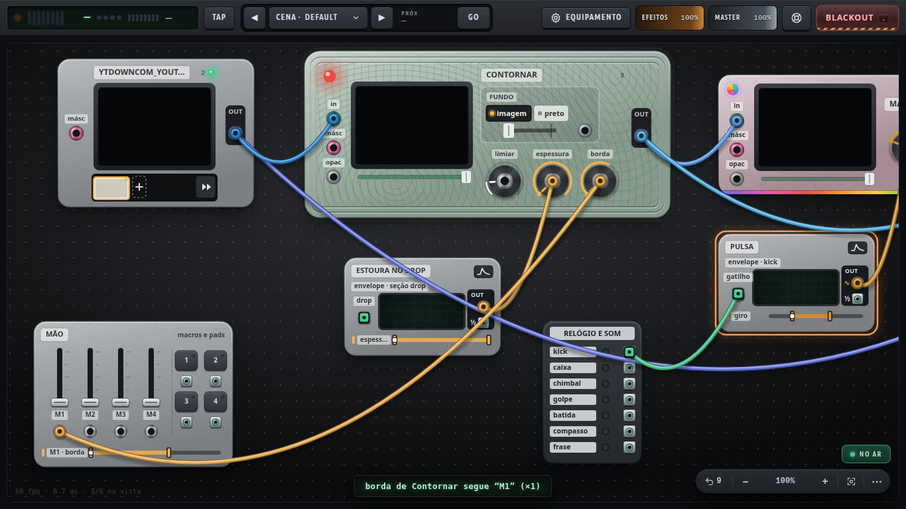
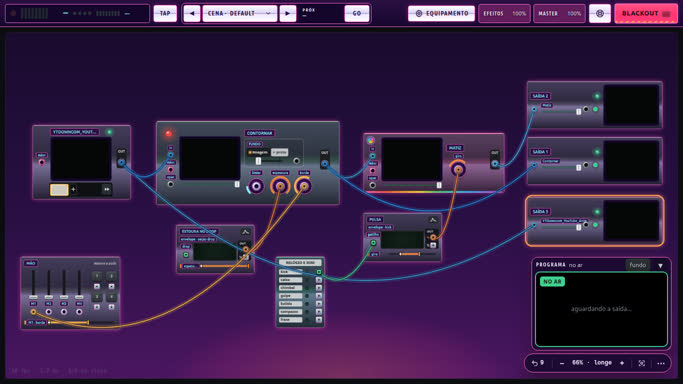
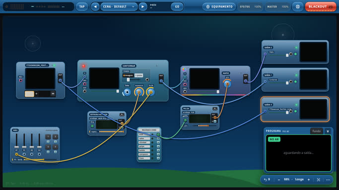
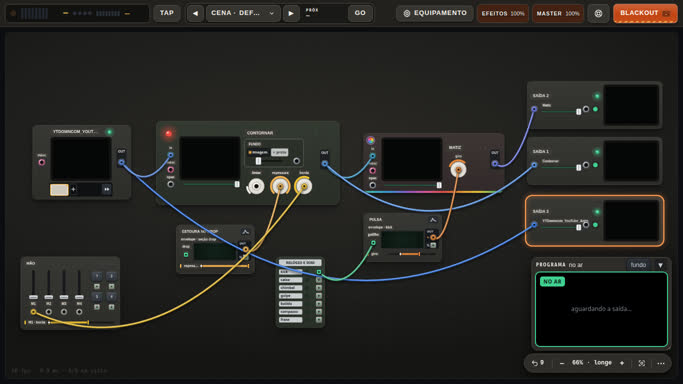
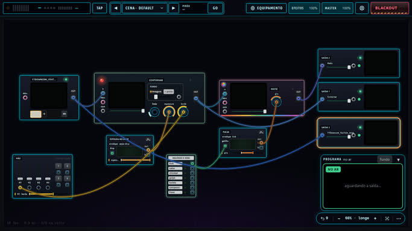

O PRISMA transforma câmera, vídeo e a tela do computador em imagem que dança com a música. Esta página conta, em linguagem simples, o que cada peça faz, como as peças conversam entre si e por que foram feitas assim.
última versão · o portátil não instala nada: descompacte e abra o prisma.exe ·
todas as versões · fluxo técnico (para quem programa) ·
código
Um sintetizador modular de som é uma caixa cheia de módulos pequenos — um faz uma onda, outro filtra, outro muda o volume — ligados por cabos. Nenhum módulo sozinho é "a música": a música sai das ligações.
O PRISMA é a mesma ideia aplicada à imagem. Cada módulo faz uma coisa só (girar, desfocar, mudar a cor, desenhar listras…) e você liga um no outro com cabos. A imagem entra por um lado (câmera, vídeo, tela do computador) e sai pelo outro (projetor, telão, webcam virtual). A música, ouvida o tempo todo, faz os knobs se mexerem sozinhos.
Em cima, a imagem anda da esquerda para a direita. Embaixo, a música vira eventos ("bateu o bumbo!") e sinais (um número que sobe e desce), que sobem pelos cabos e giram os knobs dos módulos.
Separar o que transforma a imagem (módulos) de o que faz mexer (alteradores) é a decisão mais importante do projeto. Um módulo de giro não sabe nada de música: ele gira o quanto o knob mandar. Quem liga o giro ao bumbo é o alterador. Assim, qualquer movimento serve em qualquer knob — e não existe um "giro que pulsa", um "giro que segue o grave"… é um giro só.
Tudo acontece numa tela só — como num rack de verdade, monta-se e toca-se no mesmo lugar. Em cima fica o que você toca durante o show; no meio, o canvas com os módulos; nos cantos, a vista e o programa.

12345678910111213141516O programa (o que o público está vendo) fica num monitor pequeno no canto de baixo, em cima da pílula. Dá para recolhê-lo numa aba "NO AR" ou pôr atrás do canvas, como fundo.
Para criar qualquer coisa, abra a roda: dois cliques no vazio do canvas (ou a tecla Enter). Por fora ficam as famílias de módulos, as fontes, os mixers e saídas; no anel de dentro, os alteradores, separados por de onde vem o movimento: relógio, som, imagem e corpo, mão.

Tudo no PRISMA é uma destas três coisas. A cor do cabo diz qual delas está passando — em qualquer aparência que você escolher.
Uma foto colorida com transparência, 60 vezes por segundo. Sai do OUT de um módulo e entra no in de outro. Jack redondo.
Um único número que vai de 0 a 1 e muda com o tempo: o grave da música, uma onda lenta, a altura da sua mão. Entra no centro de um knob. Jack redondo.
Um "agora!": bateu o bumbo, começou o compasso, chegou o drop. Liga, desliga, troca ou dispara alguma coisa. Jack quadrado.
Separar os três deixa cada cabo dizer uma coisa só. Um sinal gira um knob aos poucos; um evento muda algo de uma vez. Se fosse tudo igual, um bumbo ligado num knob viraria um tremelique sem forma.
Cada módulo é um pequeno programa que roda na placa de vídeo e responde a uma única pergunta: "qual a cor deste ponto da imagem?". A placa de vídeo faz essa pergunta para os 2 milhões de pontos da tela ao mesmo tempo, 60 vezes por segundo. Por isso o PRISMA aguenta muitos módulos sem engasgar.
A cor do gabinete mostra a família. Cada família responde a um tipo de pergunta:
| família | o que faz | exemplos |
|---|---|---|
| cor | muda as cores, sem mexer no lugar de nada | Matiz, Saturar, Tingir, Paleta |
| luz | muda claro e escuro | Luz, Níveis, Limiar, Inverter, Brilhar, Vinheta |
| geometria | muda onde as coisas estão | Mover, Rodar, Espelhar, Fatias, Polar, Lente |
| distorção | entorta como água ou vidro | Onda, Gota, Separar |
| textura | mexe no detalhe fino | Desfocar, Afiar, Grão |
| forma | desenha a partir da imagem | Contornar |
| gerador | cria imagem do nada | Ruído, Listras, Pontos, Células, Reação, Fluido |
| tempo | usa quadros anteriores | Feedback (rastro) |
| mistura | combina duas imagens | Misturar, Deslocar |
| máscara | decide onde o efeito vale | Assunto, Fundo, Rosto, Mãos, Brilho, Cor |
O "nada previsível" é o que faz o movimento parecer musical. Se o knob pulsa do 0 até 0,8 no bumbo, o efeito aparece e some na batida. Se o 0 não fosse "nada", o efeito nunca sumiria e o pulso viraria tremedeira.
Um filtro (Desfocar, Matiz) substitui a imagem que entra; um desenho (Listras, Contornar) desenha sobre ela, como uma folha transparente. Nos dois casos, a opacidade diz quanto do efeito aparece.
Alguns módulos lembram do quadro anterior: o Fluido (tinta que escorre), a Reação (padrões que crescem sozinhos), o Feedback (rastros). Um evento da música pode semear ou limpar essa memória: "no drop, o coral apaga e cresce de novo".
Uma máscara é uma imagem em preto e branco que diz "aqui sim, aqui não". Todo módulo tem uma entrada másc. Exemplo: Fonte → Desfocar com a máscara Fundo = desfoca o cenário e deixa a pessoa nítida, como o modo retrato do celular.
Qualquer saída liga em qualquer entrada. Uma entrada aceita um cabo; uma saída alimenta quantos você quiser.
Quando um módulo lê outro em fila (Fonte → Contornar → Vinheta), o segundo age só no que o primeiro fez. No exemplo, a vinheta escurece as linhas do contorno — não a câmera por trás delas. Quer o efeito na imagem inteira? Puxe um cabo paralelo direto da fonte.
Se você fecha um círculo (a saída volta para a entrada de um módulo anterior), o PRISMA não trava: o cabo que fecha o laço entrega o quadro anterior. É o mesmo que apontar uma câmera para a própria TV. Com um Rodar no laço sai uma espiral; com um Desfocar, fumaça.
É o eco: o som de agora volta um pouquinho atrasado, misturado ao novo, cada vez mais fraco.
Para pôr um módulo no meio de um cabo, arraste-o solto por cima do cabo: o cabo acende e, ao soltar, o módulo entra e os vizinhos abrem espaço. Para tirar um módulo da corrente, sacuda ele.
O mixer tem 2, 4 ou 8 entradas. Cada entrada é uma camada com seu fader de opacidade e um olho (entra/sai); a de cima fica na frente. Como as camadas se combinam é o modo:
| modo | o que faz | quando usar |
|---|---|---|
| normal | a de cima cobre a de baixo | o padrão |
| soma | soma as luzes: tudo clareia | brilho, fogo |
| tela | clareia sem estourar no branco | dupla exposição suave |
| multiplicar | escurece: só passa o que é claro nas duas | sombra, textura |
| diferença | mostra onde as duas diferem | psicodélico |
A saída é a ponta final, uma por tela do palco. Depois dela vêm, em ordem: a cor da cena, a transição (quando troca de cena), a cor geral, o fader Efeitos e o Master.
O Efeitos existe para "voltar para a imagem limpa" de uma vez, sem desligar módulo por módulo. O Master fica por último porque é o freio de mão: o que estiver antes, ele manda.
Um knob parado dá uma imagem parada, e no show suas mãos não dão conta de 20 knobs. Quem gira é o alterador: um módulo prateado com uma telinha de osciloscópio, que desenha a onda que ele está produzindo.
| jeito | como anda | exemplo |
|---|---|---|
| loop | repete sozinho uma forma (onda, serra, degraus, acaso), no tempo da música | respira: sobe e desce a cada 4 batidas |
| envelope | um evento dispara um "soco": sobe rápido e cai devagar | pulsa: a cada bumbo, o giro dá um salto e volta |
| segue | acompanha um sinal, suavizado | segue o grave: o zoom acompanha o baixo |
São o LFO (loop), o envelope disparado (envelope) e o seguidor de envoltória (segue) de qualquer sintetizador.

Clique no jack ∿ do alterador: o cabo fica na sua mão. Clique num knob: ligou. Com Shift, junta vários knobs antes de soltar. Clique direito ou Esc cancela. (Arrastar também funciona.) O centro de cada knob é um jack: quando ele está ligado, o knob não gira mais à mão — quem manda é o alterador, e mexer nele faz o alterador dono piscar.
O alterador produz de 0 a 1; cada knob ligado escolhe a sua faixa. Pulsar de 0,5 até 0,8 é sutil; de 0 até 1, violento. Se "de" for maior que "até", o movimento se inverte (o bumbo abaixa em vez de subir). As pontas da faixa se arrastam na linha do próprio alterador; dois cliques voltam ao padrão.
Separar a forma do movimento (o alterador) do tamanho dele (a faixa de cada knob) deixa você usar um único "pulso no bumbo" em cinco lugares — cada um na medida certa — e trocar a forma de todos de uma vez.
O módulo Relógio e som mostra os eventos da música como jacks quadrados, cada um com uma luz que pisca quando ele acontece: kick, caixa, chimbal, golpe (qualquer ataque forte), batida, compasso e frase. Um cabo verde leva o evento até quem vai reagir:
| ligue o evento em… | e acontece |
|---|---|
| a luz LIGA de um módulo | o módulo liga e desliga a cada evento |
| um seletor (tecla, régua, giratório) | passa para a próxima opção |
| o ▶▶ de uma fonte | troca para a próxima fonte da bandeja |
| o olho de uma camada do mixer | a camada entra e sai |
| o gatilho de um envelope | dispara o envelope |
| um knob livre | nasce um envelope "pulsa" ligado nele |
O comparador ½ de um envelope também é um evento: dá para encadear ("quando esse envelope passar da metade, dispare aquele outro", ou "troque a fonte").
O cabo de evento mora no destino: quem recebe decide o que fazer. Por isso o mesmo kick pode ligar um módulo, trocar a fonte e disparar três envelopes ao mesmo tempo, sem nenhuma peça precisar saber das outras.
Os eventos do som param quando a música para. Se quiser que um envelope continue no silêncio, marque nele "sem som: ⏱ relógio": depois de 2 compassos sem som, cada batida do relógio conta como um bumbo.
A MÃO é o módulo da sua mão (na roda, anel de dentro, família Mão). Ela tem:
Os faders e pads aprendem um controlador MIDI físico (Equipamento › Controle): o fader de verdade mexe o da tela. Uma MÃO por cena; escolha ela e aperte Delete para tirar (os knobs voltam a girar à mão).
A macro é o gesto do VJ: uma mão, vários parâmetros, cada um reagindo na medida certa. O motor sempre soube fazer isso; faltava um lugar na tela — e o lugar certo é um módulo como os outros, com jack e cabo.
O PRISMA escuta o som que está tocando no computador (ou uma entrada de áudio) e transforma em números.
Pedaço por pedaço, o som passa por uma FFT — uma conta que separa um som misturado nas frequências que o compõem, como um prisma separa a luz branca em cores (daí o nome). O resultado vira 8 faixas, do sub-grave ao "ar", cada uma um sinal de 0 a 1, e três grupos: grave, médio e agudo.
Cada faixa é medida contra o próprio máximo recente — o grave é sempre muito mais forte que o agudo; sem isso, um estaria sempre no talo e o outro no zero. E o botão calibrar silêncio mede o chiado da sua entrada com a música parada, para ele não acender nada.
O PRISMA procura de quanto em quanto tempo os ataques se repetem e acha o andamento (BPM). Um relógio interno, como um metrônomo que se corrige sozinho, diz a todo momento em que ponto da batida, do compasso e da frase estamos. Se ele errar, você corrige no visor: TAP, dobrar, dividir, marcar o "1".
O movimento segue o relógio, não os picos crus. Por isso um "respira a cada 4 batidas" continua no tempo mesmo num trecho sem bumbo — como um baterista que não para quando a banda dá uma pausa.
Comparando a energia recente com a do último minuto, o PRISMA classifica o momento como intro, sobe, drop ou pausa (sempre no começo de uma frase). E estima o tom da música, que pode virar uma cor.
Redes neurais pequenas, rodando no próprio computador (sem internet), olham as fontes e encontram rostos e olhos, o corpo e as mãos (33 pontos do esqueleto), objetos comuns e o assunto (quem está na frente do cenário). Isso vira máscaras (o efeito só no rosto) e sinais (a altura da mão controla o zoom; um rosto que aparece é um evento).
Essas redes são pesadas. Elas só rodam enquanto algum módulo pede o resultado, e por fora do desenho: se a rede demora, a imagem continua lisa e só a máscara se atualiza um pouco menos vezes.
Uma cena é uma foto de tudo: módulos, cabos, knobs e movimentos. A cena no ar se salva sozinha a cada mudança.
Uma transição com a cena congelada parece um corte de vídeo. Com as duas vivas, parece que a música "virou" a imagem.
Ninguém tem tempo de pensar em segurança no meio do drop. Por isso ela fica depois de tudo e funciona sozinha: não importa o que os módulos façam, o que sai já passou pelo limite.
No menu ⋯ da pílula, pele troca a aparência inteira na hora: Hoje (o metal de sempre), Nanquim, Grafite sóbrio, Braun preto, Brinquedo noturno, Aero noturno, Vaporwave, Brutalista escuro, Néon e Terminal. Todas escuras, para não ofuscar no show.




O que não muda em nenhuma pele:
Tudo funciona no touchpad do notebook: nenhum gesto exige arrastar, e um clique que treme até 8 pixels ainda conta como clique.
| gesto | o que faz |
|---|---|
| 2 cliques no vazio · Enter | abre a roda (digite para procurar) |
| clique num jack, clique no destino | liga um cabo (Esc ou clique direito cancela) |
| 2 cliques num módulo · clique direito parado | abre o painel dele |
| pinça · roda do mouse · + − | zoom (de longe, os módulos viram blocos coloridos) |
| dois dedos no touchpad · botão do meio | anda pela mesa |
| Alt + roda num knob | gira o knob (sem Alt, a roda nunca mexe no show) |
| H · botão caber | a câmera voa até caber tudo; de novo, volta |
| soltar um módulo num cabo · sacudir | entra no cabo · sai da corrente |
| Espaço | GO (a próxima cena) |
| letra da cena | vai para aquela cena |
| . | blackout |
| Ctrl+Z | desfazer |
| Delete | tira o escolhido (módulo, cabo, MÃO) |
| segurar Esc 2 s | fecha o PRISMA |